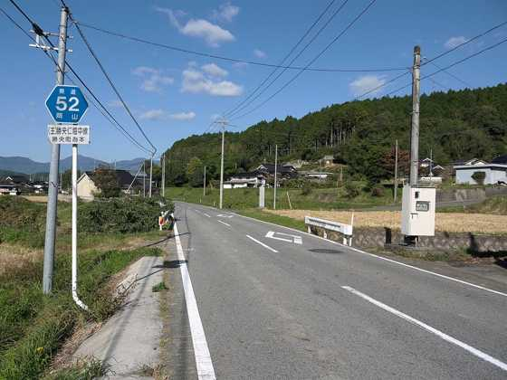
岡山県勝央町勝間田 / 旧出雲街道沿い
むかしの郵便局のあとで、
絵本をひらく時間を。
石畳の旧出雲街道の通りに、郵便局だった建物をいかした絵本カフェがあります。ページをめくりながら、季節の小皿を手巻きにして。
お店のこと
手紙が行き交った場所に、絵本が並ぶ。
「絵本とカフェ あーとゆーや」は、絵本好きの女性店主・大山恵美さんが営むカフェです。2022年11月にオープンし、店舗は勝間田郵便局の跡地を利用しています。入口横には郵便局の看板が残されていると紹介されています。
店内には100冊以上の絵本があり、自由に読むことができます。なつかしい絵本のほか、書店ではあまり見かけない絵本もあるそうです。絵本にまつわるイベントが不定期に開かれることもあります。
情報源: Webタウン情報おかやま(2023年取材) / まちライブラリー / note記事 / Instagram
店名の意味・由来は確認できていないため、ここでは触れていません。見出しや文のまとめ方は制作側の表現です。
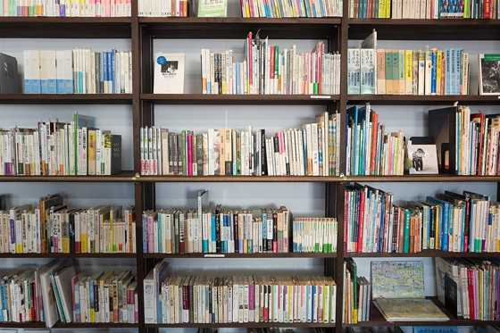
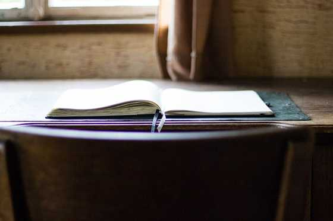
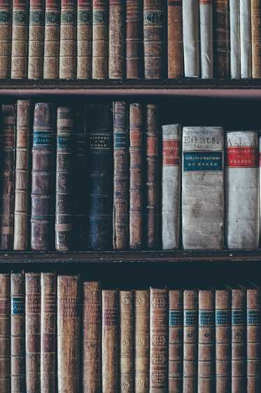
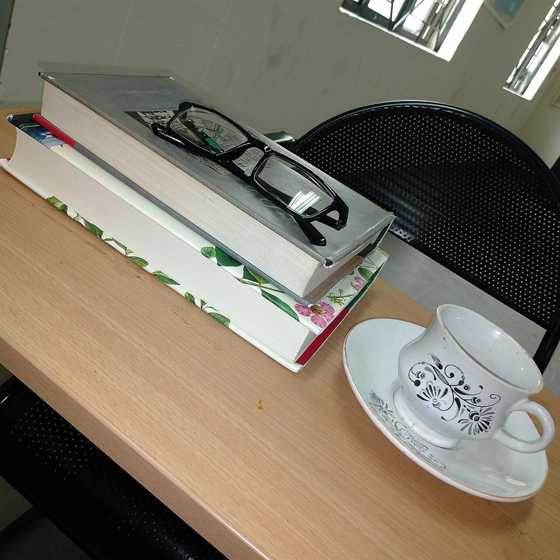
メニュー
季節の小皿を、自分で巻く。
紹介記事によると、名物は「勝央てまきランチ」。季節の小皿料理を手巻き寿司にして、好きな組み合わせで味わうランチで、前日までの予約制とされています。2024年末からは「せいろ蒸しランチ」を出しているという記事もあります。抹茶パフェなどの甘味も紹介されていますが、現在の内容・価格は変わることがあるため、下は準備中としています。
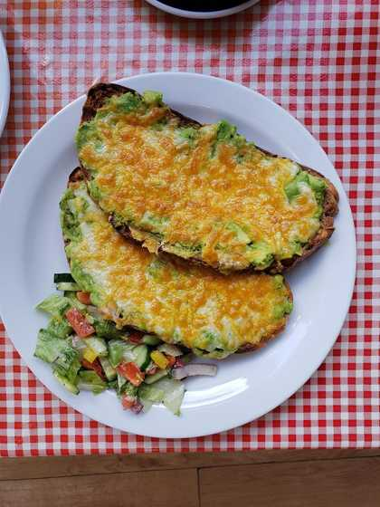
ランチ
準備中 内容・価格
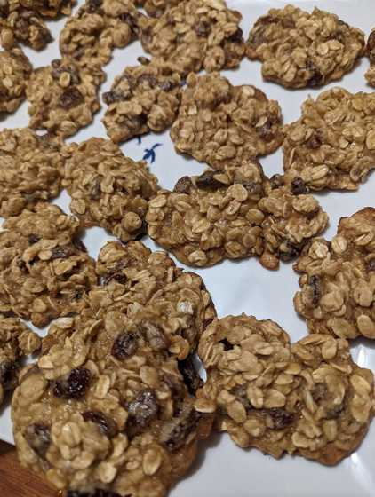
甘味・おやつ
準備中 内容・価格
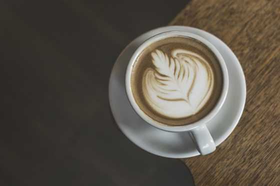
ドリンク
準備中 内容・価格

お茶
準備中 内容・価格
写真はフリー素材のイメージで、実際のお料理ではありません。
口コミ(イメージ例)
こんな声が届きそうな、お店です。
子どもの頃に読んだ絵本を見つけて、つい長居してしまいました。静かで落ち着きます。
小皿がたくさん並んで、自分で巻いて食べるのが楽しい。器もきれいでした。
昔ながらの通り沿いで、ほっとひと息つけました。また季節を変えて訪れたいです。
上の3件は制作側が作成したイメージ例で、実在のお客様の声ではありません。

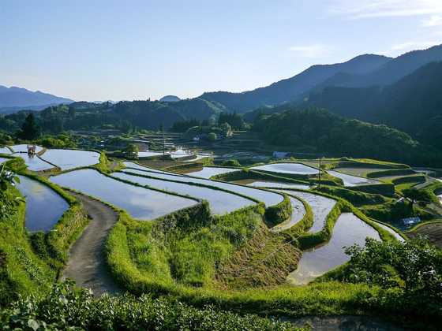
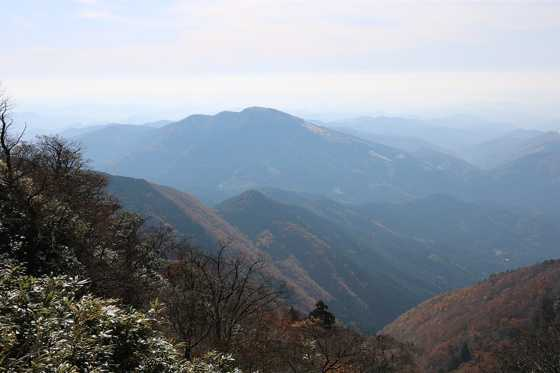
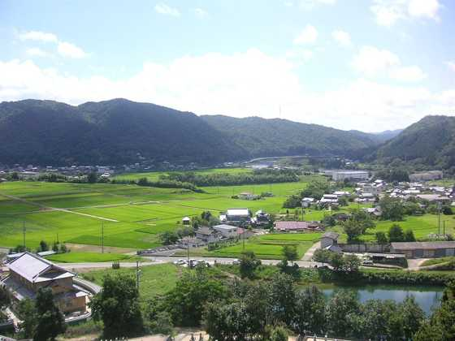
アクセス
勝間田の石畳の通りへ。
| 住所 | 岡山県勝田郡勝央町勝間田714-1 |
|---|---|
| 電話 | 準備中 |
| 営業時間 | 準備中 |
| 定休日 | 準備中 |
| SNS | Instagram @art_you_ya |